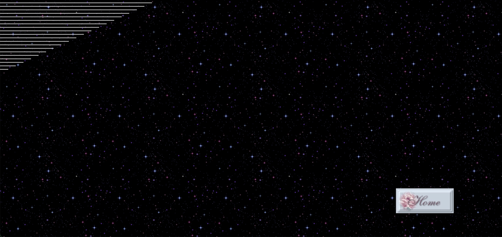
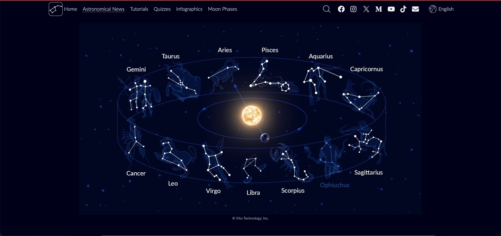
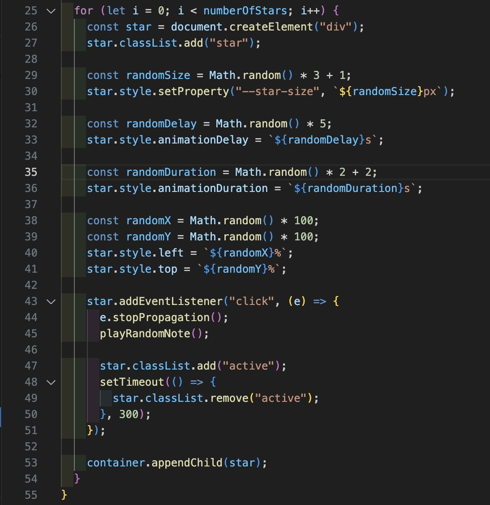
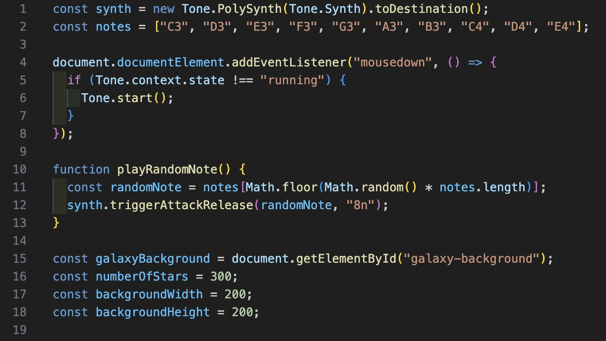

Conceptual Response
Sound Galaxy is an interface that allows users to explore the galaxy
and the constellations of the 12 zodiac signs, combined with sounds.
Each planet serves as a different sound source. The interface is
designed with a large, scrollable background to create a feeling of
infinite expanse. Hidden within the galaxy are the 12 zodiac
constellations. When a user clicks on a star belonging to a specific
constellation, the stars will automatically connect to form the
constellation and play sounds. Additionally, background effects such
as twinkling stars are created to make the experience more vivid.
Prompt: Spatial control
I want to create a space where sound is positioned within a 2D
environment, allowing users to move around and hear changes as the
planets emit sound.
Technique: Random (Math.random())
I use random values to
introduce unpredictability into the experience, for example: The
position and brightness of the stars are generated randomly, so the
galaxy background is always different each time it loads. The
twinkling effect of the stars changes randomly, creating a natural
feeling. The sound can vary slightly (pitch, filter, delay) based on
random values, so users don’t hear the same repetitive sound.
Visual Plan
I drew inspiration from Olia Lialina’s website to create a wide-screen design, where users can scroll to evoke a sense of infinity. Within this space, constellations representing the 12 zodiac signs are paired with sound, offering an engaging and exploratory experience.
Image from Olia Lialina's website
Image from Star Walk 2
Below is the user flow and wireframe


Technical Approach
Galaxy visuals: Stars are generated randomly using Math.random() for positions, brightness, and twinkling, making the background different on each load.
Spatial audio: The sound changes every time users click on the star.
System Map


Reflection on Peer Testing — Week 8
Peer Testing Prompts:
- “Is it clear what the project is about when you first land on the galaxy page?”
- “Are the interactive elements (stars, planets) easy to notice and use?”
- “Do the visual effects (glow, twinkling stars) match the theme of ‘Sound Galaxy’?”
- “Does the sound change appropriately when interacting with stars or moving around?”
- “Would it be helpful to provide instructions before users start interacting, or should users explore freely?”
Some participants mentioned that they immediately understood the project’s theme through the visual design: the dark background combined with glowing stars effectively conveyed the idea of a galaxy and sound interaction. However, many people were still confused about how to interact with the website without instructions. There was an opinion that I should create a pop-up to explain how this website works, I also felt that this was necessary and will consider adding it. Some opinions said that the stars were too small to interact, but according to the visual style that I was inspired by, I felt that making the stars larger size might make the galaxy interface look less natural.
Overall, most participants agreed that the interface successfully communicated the project’s concept, but the main issue lay in usability. Users suggested expanding the stars' interactive area so that they can click easier, and adding clearer guidance on how to use the site as well.
In concusion, from the peer user testing in week 8, I realized that the project is on the right track in terms of concept and aesthetics, but still needs improvement in interaction and user guidance. My next steps are to enlarge the clickable area of the stars, add clearer visual feedback, diversify the audio, and provide an optional guidance system. I'll try to find the most optimal way to both satisfy visual needs and enhance user experience. I hope these changes will make the experience more intuitive and engaging.